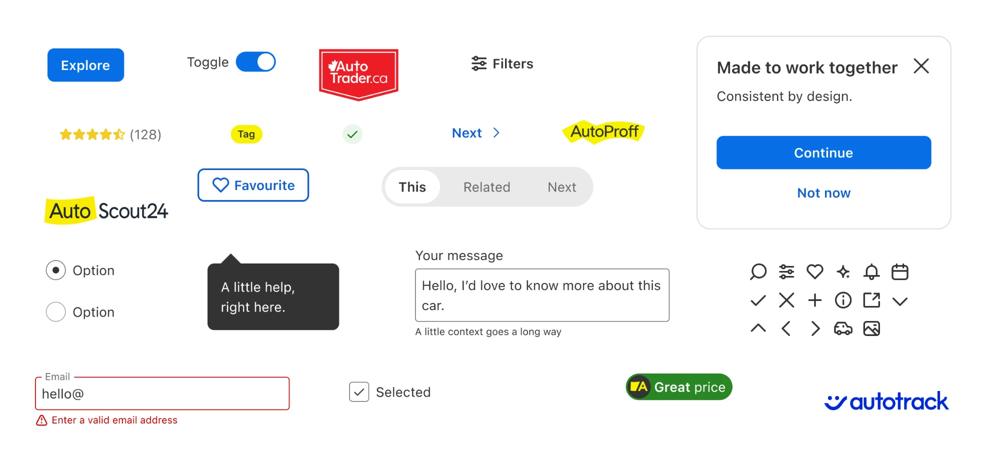
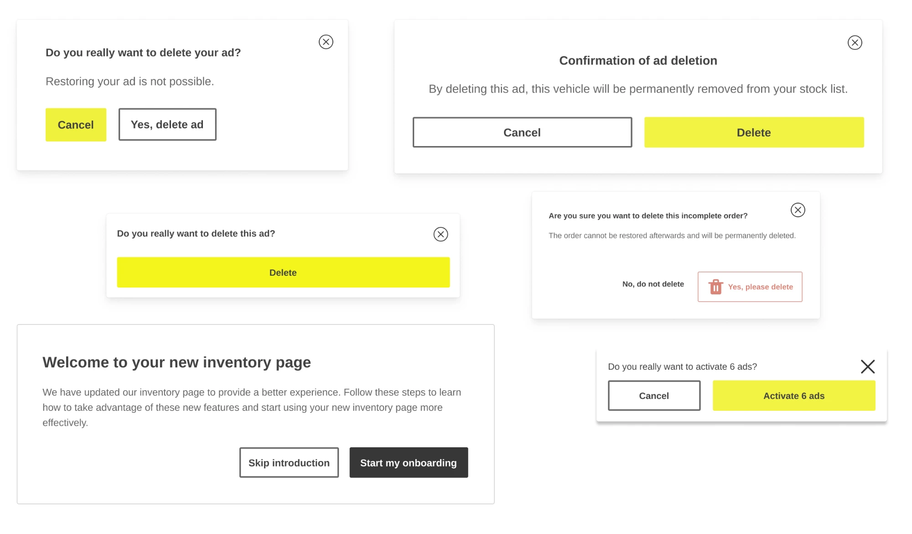
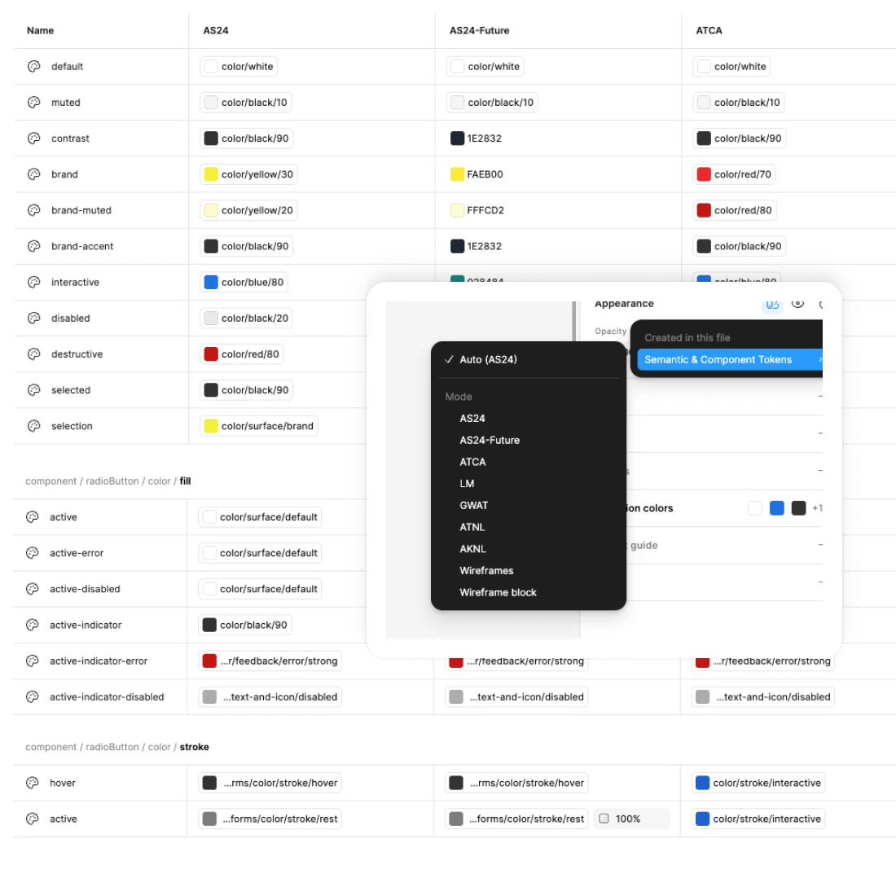
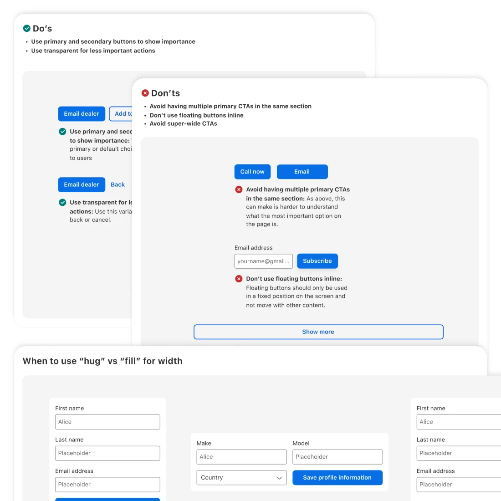

Multi-Brand Design System
Scaling a multi-brand, code-synced design system without a dedicated team.

A system nobody owned
When I took on leading Showcar, AutoScout24's design system, it had no owner. It was a collection of components, and how they were implemented in the product was patchy.
I led the project alongside my product work. That made priorities the real job: deciding what the system needed most, and not trying to do everything myself.
Six modals, and a second brand
Without an owner or a shared source of truth, every team solved the same problems in its own way.
6 different modal styles live in production.
Then the business acquired AutoTrader.ca in Canada, a company with a different brand. The acquisition only made sense if both businesses ran on one platform. To support that, the design system had to become far more complete, and it had to carry more than one brand.

Building it with people, not for them
- A way to contribute. I set up a contribution process: a dedicated Slack channel and a bi-monthly UI Guild call where designers could propose new components or changes to existing ones.
- Tokens that match one to one. I created a token system that syncs Figma variables with the development tokens, so design and code always hold the same values. Switching brand became a change of token set rather than a redesign.
- Engineers who cared. I looked for the engineers who were passionate about the system and wanted to build it together, and made them part of the core group.
- Components with the UX team. I worked with the UX team to design the components and write their documentation, so every addition shipped with guidance on how to use it.


One system, many brands
Showcar is now complete enough to build on. It underpins search, the private seller flow and the key dealer interfaces, and it supports multiple brands through its tokens. One system now carries AutoScout24, AutoTrader.ca, Autotrader.nl, gebrauchtwagen.at, autotrack.nl and LeasingMarkt, the foundation that running these businesses on one platform depended on.
Because design and code share the same tokens, what designers specify is what engineers build.


AI agents are becoming a customer for the design system.
The system keeps evolving to support new AI workflows. I'm integrating it with Figma Make and Codex, and making the documentation machine-readable, so agents can build to the same standard as the team.